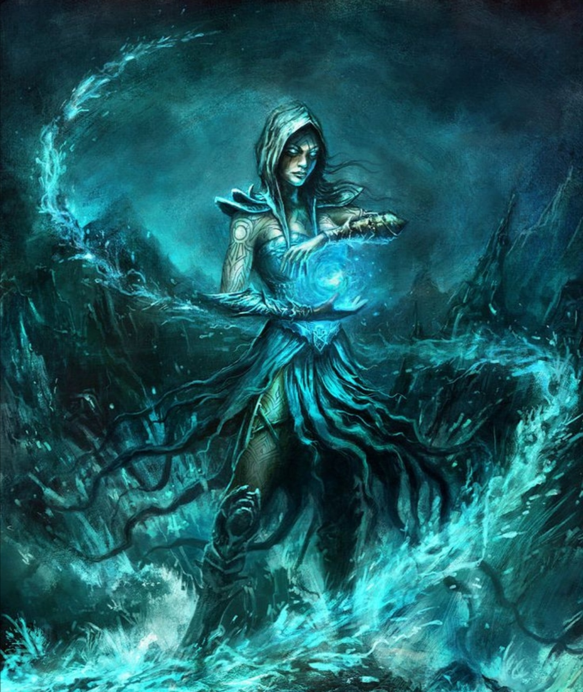

Ateş, su, hava ve toprak büyülerinde kendilerini geliştirmiş bir büyücü sınıfıdır. Bütün büyücü sınıflarda olduğu gibi bu sınıfta da büyülerin etkinliği için zeka, saldırılardan kolay kaçabilmek için ise çeviklik çok önemlidir. Irk seçimi buna göre yapılmalıdır.
Seviye 1
Hançer: Hançer kullanabilme yeteneğidir.
Döven: Döven kullanabilme yeteneğidir.
Kırbaç: Kırbaç kullanabilme yeteneğidir.
Zayi: Dövüş sırasında anlık kaybolup yeniden belirmedir.
Anımsa: Ait olduğunun dinin tapınağına dönüş komutudur. Seviye 10a kadar geçerlidir. (anımsa)
Parşömen: Parşömen okuma yeteneğidir.(oku yazdıktan sonra okunacak parşömenin adı yazılır.)
Tılsımlar: Büyü kullanabilme ile ilgili bir yetenektir.(otomatik)
Değnekler: Değnek kullanabilme yeteneğidir.(otomatik)
Seviye 5
Pazarlık: Alışverişlerde alırken ucuza alma, satarken pahalıya satma yeteneğidir. Bu yetenek kullanılarak dükkan sahibi fiyat konusunda ikna edilmeye çalışılır. Hırsızlar pazarlık konusunda doğuştan yeteneklidirler.(otomatik)
Seviye 6
Meditasyon: Hızlı iyileşmeye benzer. Yöntem olarak uyurken veya dinlenirken zihin yoğunlaşması kullanılır ve büyü gücünün (mana) yenilenmesi sağlanır.(otomatik)
Seviye 9
Hızlı iyileşme: Yaşam puanının daha hızlı yenilenmesini sağlayan yetenek. Bu yetenek yürürken de, dinlenirken de, uyurken de çalışır.(otomatik)
Seviye 10
Büyü tanıma: Odada yapılan büyülerin isimlerini görebilmeyi sağlayan yetenek.(otomatik)
Seviye 21
Trans: İyileşmenin hızını arttıran yetenek.(otomatik)
Seviye 27
Sıyrılma: Saldırının vuracağı noktadan ayrılma prensibine dayanan tekniktir.Hem saldıran hem de sıyrılmayı deneyen için çeviklik değeri çok önemlidir.Savaşçılar sıyrılma yeteneğinin ustalarıdırlar.(otomatik)
Seviye 34
İkili hamle: Dövüşlerde bir turda iki hamle yapabilmek için gerekli yetenek.(otomatik)
Seviye 35
Çıplak el: Silahsızken de etkili dövüşebilmeyi sağlayan yetenek. (otomatik)
Seviye 48
Kırbaçla: Silah olarak bir kırbaç kullanırken, kırbacı savurarak düşmanın kaçmasını engelleyecek şekilde zarar verme yeteneği.
Seviye 1
Fişek: Düşamana zarar veren bir büyüdür. Büyünün seviyesi yükseldikçe vereceği zarar artar.(büyü fişek düşman_adı)
Seviye 3
Vantrolog: Başka birinin ağzından konuşma büyüsüdür. (büyü vantrolog
Seviye 4
Asılı disk: Ağırlık taşımak için kullanılan bir disk yaratma büyüsü. (büyü asılı)
Seviye 7
Zehir saptama: Zehirli eşyaları saptamayı sağlayan büyü.(büyü 'zehir saptama' eşya_adı)
Seviye 8
Ayaz: Zarar vermenin yanısıra kurbanın gücünü de azaltan büyü. (büyü ayaz düşmanadı)
Su yaratma: İçecek taşıyıcılarının ( örn. matara ) içini su ile dolduran büyü.(büyü 'su yaratma' su_taşıyıcısının_adı)
Görünmezi saptama: Büyücünün görünmezleri saptamak için kendi gözlerine yaptığı büyüdür.(büyü 'görünmezi saptama')
Şok kavrayışı: Kurban üzerine zarar uygular. Büyünün seviyesi yükseldikçe vereceği zarar da artar.(büyü şok)
Seviye 10
Görünmezlik: Hedefin görünmez olmasını sağlayan büyü.(büyü görünmezlik)
Seviye 11
Cin ateşi: Kurbanı kolay yaralanmasını sağlayan bir aura ile çevreler.(büyü cin düşman_adı)
Seviye 12
Büyü saptama: Büyülü eşyaları saptamayı sağlayan yetenek.(büyü büyü)
Seviye 13
Zırh: Hedef kişiyi korumayı, aldığı darbelerin etkisini azaltmayı amaçlar.(büyü zırh hedef_adı)
Mantar: Yenilebilir bir mantar yaratan büyü.(büyü mantar)
Kem saptama: Kötü ruhları saptayabilmek için büyücünün kendi gözlerine yaptığı büyüdür.(büyü kem)
İyi saptama: Büyücünün iyi ruhları saptamak için kendi gözlerine yaptığı büyü.(büyü iyi)
Seviye 14
Yanan eller: Hedefe zarar veren bir çeşit büyü.(büyü yanan düşman_adı)
Seviye 16
Nakil: Büyüyü yapanı diyarın rastgele bir odasına nakil eder.(büyü nakil)
Seviye 17
Isı görüşü: Karanlıkta ısı yayan canlıları sezmeye yarar.(büyü ısı)
Seviye 18
Tanımlama: Eşyanın özelliklerini ayrıntılı bir şekilde görmeyi sağlayan büyü.(büyü tanımlama eşya_adı)
Seviye 19
Deprem: Kurbana zarar vermeyi sağlayan alan büyüsü.(büyü deprem)
Seviye 20
Hava kontrolü: Havanın durumunu iyileştiren veya kötüleştiren büyü.(büyü hava iyi, büyü hava kötü)
Kalkan: Kişiyi koruyan bir kalkan oluşturan büyü.(büyü kalkan hedef_adı)
Seviye 21
Uçma: Uçmayı sağlayan büyü.(büyü uçma hedef_adı)
Seviye 22
Renk spreyi: Düşmana zarar veren bir büyü.(büyü renk düşman_adı)
Seviye 23
Zehir tedavi: Hedefteki zehri yoketmeyi amaçlayan büyü. Zehir tedavi.(büyü “zehir tedavi” hedef_adı)
Yıldırım: Kurban üzerine zarar uygular. Büyünün seviyesi yükseldikçe vereceği zarar da artar.(büyü yıldırım düşman_adı)
Seviye 24
Cin sisi: Odada saklananları ortaya çıkaran mor bir duman oluşturur.(büyü 'cin sisi')
Saydamlık: Kişiyi kapılardan geçecek şekilde saydamlaştırır.(büyü saydam)
Seviye 25
Taş deri: Kişinin derisini bir taş kadar sertleştirerek onu korur.(büyü taş)
Seviye 26
Gül: Bir adet gül yaratmayı sağlayan büyü.(büyü gül)
Koruma kalkanı: Kişiyi koruyucu bir kalkanla çevreler.(büyü koruma)
Seviye 29
Uşak küresi: Koruyucu bir küre yaratmayı sağlayan büyü.(büyü uşak)
Seviye 31
Pınar: Suyu içilebilir bir pınar yaratan büyü.(büyü pınar)
Nesne bulma: Bir eşyanın diyarın neresinde bulunduğunu bulmaya yarar.(büyü nesne nesne_adı)
Seviye 32
Anımsama sözcüğü: Kendi dininin tapınağına dönmeyi sağlayan büyü.(büyü anımsama)
Seviye 33
Şimşek çağrısı: Ancak açık havada ve kötü havada yapılabilen bu büyü, yakında bulunanlara vuran bir şimşek yaratır.(büyü 'şimşek çağrısı')
Şimşek zinciri: Bir şimşek topunun elden ele dolaşması ve dokunduğu herkese zarar vermesi üzerine kuruludur. Enerji zarar verdikçe söner ve en sonunda yitipgider.(büyü şimşek)
Bağ: Tüm mananızı hedef karaktere geçirmenizi sağlar.(büyü bağ hedef_adı)
Seviye 34
Manyetizma: Kurban üzerine zarar uygular. Büyünün seviyesi yükseldikçe vereceği zarar da artar.(büyü manyetizma düşman_adı)
Seviye 35
Alev akımı: Kavurucu alevlerle kurbana zarar veren büyü.(büyü 'alev akımı' düşman_adı)
Seviye 38
Toprak uşağı: Efendisine itaat eden bir toprak uşağı yaratır.(büyü 'toprak uşağı')
Seviye 39
Sıcaktan korunma: Kişiyi sıcağa ve sıcak büyülere karşı güçlendirir.(büyü sıcaktan)
Seviye 40
Gelişmiş saptama: Gelişmiş görünmezliğe sahip olanları görmeye yarar.(büyü 'gelişmiş saptama')
Seviye 41
Enerji dikeni: Kurban üzerine zarar uygular. Büyünün seviyesi yükseldikçe vereceği zarar da artar.(büyü 'enerji dikeni' kurban_adı)
Arz kırımı: Arzı kurbanın ayaklarına doğru kırarak ona zarar vermeyi sağlar.(büyü 'arz kırımı' düşman_adı)
Seviye 42
Ayaz topu: Kurbana zarar vermeyi sağlayan büyü.(büyü “ayaz topu” düşman_adı)
Hava uşağı: Efendisine itaat eden bir hava uşağı yaratır.(büyü 'hava uşağı')
Seviye 43
Sarmal akım: Kurbana açılan sarmal bir akım oluşturmak ve bu sarmalın içinden giderek kurbana ulaşmak için kullanılır.(büyü sarmal kurban_adı)
Gelişmiş görünmezlik: İleri seviyede bir görünmezlik büyüsüdür.(büyü 'gelişmiş görünmezlik')
Seviye 44
Soğuktan korunma: Kişiyi soğuğa ve soğuk büyülere karşı güçlendirir.(büyü soğuktan)
Seviye 46
Taktak: Kilitli kapıları açmaya yarar.(büyü taktak)
Toplu görünmezlik: Gruptakilerin tümünün görünmez olmasını sağlar.(büyü 'toplu görünmezlik')
Seviye 47
Rüzgar duvarı: Odada bulunan herkese saldıran bir rüzgar duvarı oluşturur.(büyü rüzgar)
Seviye 48
Asit oku: Kurban üzerine zarar uygular. Büyünün seviyesi yükseldikçe vereceği zarar da artar.(büyü 'asit oku' kurban_adı)
Su uşağı: Efendisine itaat eden bir su uşağı yaratır.(büyü 'su uşağı')
Seviye 50
Onar: Eşyayı onarmayı sağlar.(büyü onar eşya_adı)
Seviye 51
Kum fırtınası: Odada bulunanlara zarar veren bir kum fırtınası oluşturur. Bu büyü suya yakın yerlerde uygulanamaz.(büyü 'kum fırtınası')
Seviye 53
Topraklama: Kişinin vücuduna topraklama özelliği verir. Bu elektriğin vücuttan kolayca atılmasını sağlar.(büyü topraklama)
Seviye 55
Çöl yumruğu: Kurbana zarar vermeyi sağlayan büyü.Çöl ortamında yapılır.(büyü çöl düşman_adı)
Alev topu: Hedefe alevden bir top göndererek ona zarar vermeyi amaçlayan büyü.(büyü 'alev topu' düşman_adı)
Seviye 58
Ateş uşağı: Efendisine itaat eden bir ateş uşağı yaratır.(büyü 'ateş uşağı')
Seviye 62
Tsunami: Suya yakın yerlerde kullanılabilen bu büyü sudan oluşturulmuş bir yumruk ile kurbana zarar vermeyi amaçlar.(büyü tsunami düşman_adı)
Seviye 63
Asit patlaması: Kurban üzerine zarar uygular. Büyünün seviyesi yükseldikçe vereceği zarar da artar.(büyü “asit patlaması” kurban_adı)
Seviye 65
Ateş ve buz: Odada bulunanlara ateş ve buz topu atmayı sağlayan büyü.(büyü 'ateş ve buz')
Seviye 67
Fay: Kurbana zarar vermeyi sağlayan büyü.(büyü fay düşman_adı)
Seviye 68
Alev kalkanı: Ateş veya buz kalkanı yaratmayı sağlayan büyü.(büyü 'alev kalkanı' ateş, büyü 'alev kalkanı' buz)
Enerji uşağı: Efendisine itaat eden bir enerji uşağı yaratır.(büyü 'enerji uşağı')
Seviye 71
Büyü direnci: Kişiyi büyüye karşı dirençli kılar.(büyü 'büyü direnci')
Seviye 73
Arz soluşu: İleri bir görünmezlik büyüsü.(büyü 'arz soluşu' hedef_adı)
Seviye 75
Arz yutağı: Yerde kurbanı yutarak yok eden bir yarık oluşturmayı sağlayan büyü.(büyü 'arz yutağı' düşman_adı)